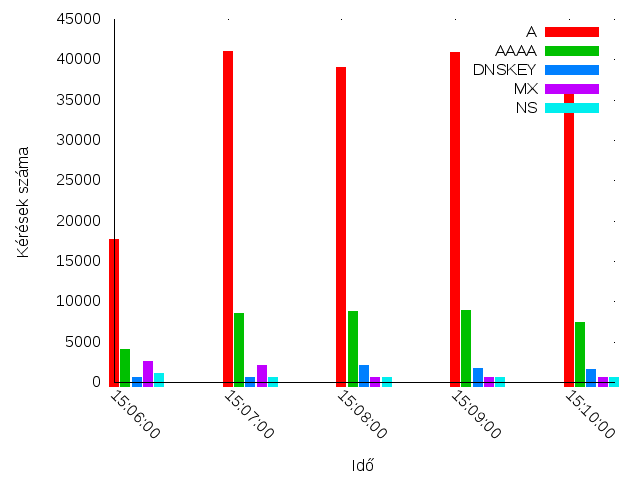

.hu DNS statisztikák

DNSmezzo eredmények
Összes eddigi DNS kérés QTYPE szerinti megoszlása (utoljára módosítva: 2011 május 15. 13:00)
| QTYPE | Jelentés | Kérések száma | Százalékban |
|---|---|---|---|
| A | a host address | 19986739 | 36.33%. |
| AAAA | IP6 Address | 3922577 | 7.13%. |
| AFSDB | for AFS Data Base location | 21 | 0.00%. |
| AXFR | transfer of an entire zone | 75 | 0.00%. |
| CNAME | the canonical name for an alias | 9734 | 0.02%. |
| DLV | DNSSEC Lookaside Validation | 268 | 0.00%. |
| DNSKEY | DNSKEY | 133 | 0.00%. |
| DS | Delegation Signer | 105 | 0.00%. |
| HINFO | host information | 26 | 0.00%. |
| MX | mail exchange | 2549237 | 4.63%. |
| NAPTR | Naming Authority Pointer | 1598 | 0.00%. |
| NS | an authoritative name server | 431870 | 0.79%. |
| NSEC | NSEC | 153 | 0.00%. |
| PTR | a domain name pointer | 47406 | 0.09%. |
| PX | X.400 mail mapping information | 547 | 0.00%. |
| RRSIG | RRSIG | 1 | 0.00%. |
| SOA | marks the start of a zone of authority | 23771 | 0.04%. |
| SPF | 26938 | 0.05%. | |
| SRV | Server Selection | 57425 | 0.10%. |
| TXT | text strings | 146543 | 0.27%. |
Időbeli eloszlás

Utoljára módosíta: 2011-05-15 12:57:47